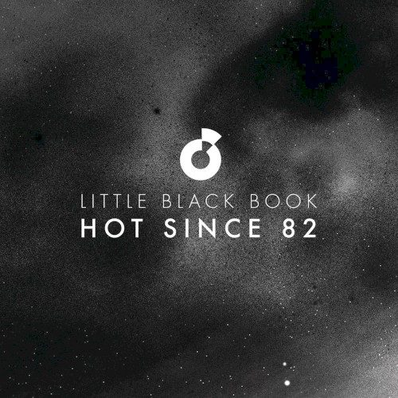

Hot Since 82 - Little Black Book


Hot Since 82 - Little Black Book
Label: Moda Black
Score: 8.5/10
Anyone who’s been digging the well-recognised success of Hot Since 82 should be jumping right onboard here. The discography of Leeds-based producer Daley Padley stretches back to 2006, though two years ago he launched his new alias with a steady stream of high-powered singles and remixes. He brings an extremely polished variant on modern tech house, plus a love of big, brash electro basslines. The appeal arguably comes though from how direct, punchy and laser-focused his grooves are; it’s underground house that’s been engineered for the big rooms.
It’s not difficult to understand why tastemakers like Pete Tong have slapped Hot Like 82 with the ‘next big thing’ tag. Little Black Book represents his first expedition into a longform musical project, helping launch a new series from the Moda Black label that’s run by Jaymo and Andy George. It’s described as “part album, part mix compilation, part remix package, part crate digging expedition”. In truth, it’s an extension of the concept that Sasha debuted with his Involver series a decade ago, in terms of blurring the lines between the artist album and mix compilation, and comprised wholly of his own productions, remixes and collaborations.
Most significantly, there’s a fresh stash of Hot Since 82 peaktime destroyers that will no doubt be crawling into the record boxes of a vast number of DJs. Padley’s sound is a high-energy one, and as a reflection of this, the energy levels of Little Black Book are in the red from beginning to end. That’s not to sell short Padley’s musicality though; there’s a vein of sophistication that runs through everything he produces, with its high impact drawn largely from the huge level of attention to detail that he shows with his studio arrangements.
Little Black Book is literally spilling over with hotness. Starting off with a bang with the vocal-led Shadows, the synth melody that steps up in Planes and Trains is rave worthy, while the electro bassline of Chords is irresistibly big and bouncy. He also shows he’s got the chops for versatility; his celebrated remix of Rudimental’s Right Here is a bona fide progressive house anthem, dithering in dirty melodies that eventually rise to the peak of the tune’s acid hook. Meanwhile, his remix of Green Velvet’s Bigger Than Prince carries one of the year’s most slamming techy grooves.
Lee Curtis’s take on Hurt You steers things in a welcome deeper direction, and the remainder of the mix shows how effortlessly Padley can switch his attention to the darker shades of tech house. However, there’s still a level of weakness in the programming of the mix, a sense of blandness that comes from being stuck in a perpetual dancefloor peak. There’s not a single track that doesn’t pack a well-honed punch, the drawback being that Little Black Book lacks some of the polished flow of a DJ set. That said, things are brought to a spectacular close.
The compilation/album fusion approach represents a much smarter route for a young producer – the chance to keep things focused in the club, rather than trying their hand at an artist album format that they’re just not ready for. Little Black Book cements Hot Since 82’s reputation as a club producer to be reckoned with, inviting comparisons with the likes of Eric Prydz as an artist who can boast a special sense for what works on the dancefloor. Keep your eyes on him.